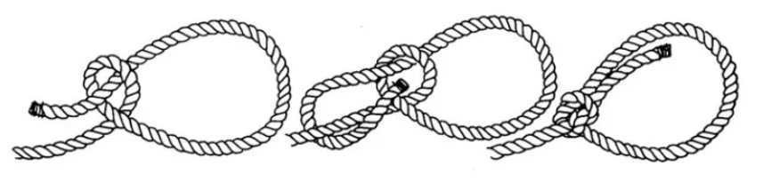
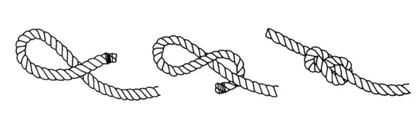
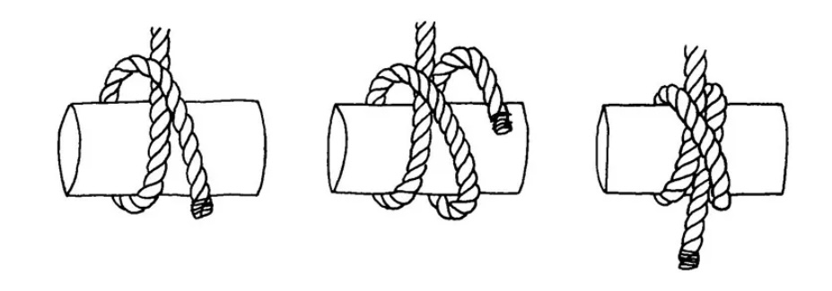
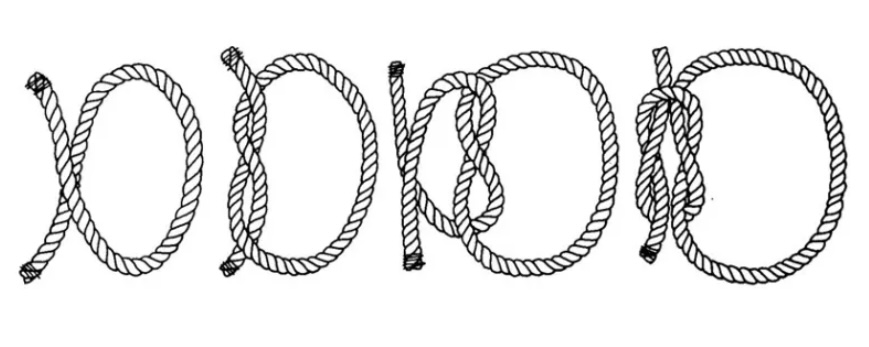

Ιστιοπλοΐα Laser στην πράξη ⚓️
Ασφάλεια, τεχνική και διασκέδαση στα κύματα. Τμήματα ILCA 4/6/7.
Κλείσε δοκιμαστικό Δες προγράμματαΗ ομάδα
Ο προπονητής και το επιτελείο της Ακαδημίας NOTK Laser.
📸 Πατήστε εδώ — εδώ θα ανεβάζουμε φωτογραφίες της ομάδας!
Συνομιλία
💬 Ελάτε και εσείς στην παρέα μας στο Viber!
Άνοιγμα ομαδικής Viber⚓ Ακαδημία Ιστιοπλοΐας Laser NOTK
Η Ακαδημία Ιστιοπλοΐας Ενηλίκων του Ναυτικού Ομίλου Τζιτζιφιών Καλλιθέας (NOTK) προσφέρει προγράμματα εκμάθησης και προπόνησης για όσους αγαπούν τη θάλασσα και θέλουν να γνωρίσουν την ιστιοπλοΐα στο δημοφιλέστερο σκάφος ενός ατόμου: το Laser.
Τα μαθήματα απευθύνονται σε ενήλικες και εφήβους από 14 ετών και άνω, ανεξαρτήτως εμπειρίας. Το πρόγραμμα περιλαμβάνει θεωρητική κατάρτιση και πρακτική εξάσκηση στη θάλασσα, πάντα με καθοδήγηση από έμπειρους προπονητές του Ομίλου.
🚤 Σκάφη & Εξοπλισμός
- Laser 4.7, Radial (RDL), Standard (STD) — τα κλασικά Laser σκάφη για όλα τα επίπεδα.
- Laser Baby — ειδική έκδοση με μικρότερο πανί, ιδανική για νέους ιστιοπλόους ή άτομα που προτιμούν ελαφρύτερο εξοπλισμό.
- Yngling, Soling, Hobie One 14, Manta 19 — σκάφη ομαδικής ιστιοπλοΐας για πιο προχωρημένη εξάσκηση.
🕘 Πρόγραμμα Μαθημάτων
- Κάθε Σάββατο & Κυριακή
- Ώρες: 09:00 – 13:00
- Τοποθεσία: Εγκαταστάσεις NOTK, Δέλτα Φαλήρου
Οι συμμετέχοντες χωρίζονται σε ομάδες ανάλογα με το επίπεδο εμπειρίας τους…
🧭 Στόχος της Ακαδημίας
- Να μάθει σωστές τεχνικές πλεύσης…
- Να ασκηθεί σωματικά και πνευματικά…
- Να ζήσει την εμπειρία της ιστιοπλοΐας…
🌊 Γιατί να επιλέξετε την Ακαδημία NOTK
- Έμπειροι και πιστοποιημένοι προπονητές
- Πλήρως εξοπλισμένα Laser και βοηθητικά σκάφη
- Εύκολη πρόσβαση στο Δέλτα Φαλήρου
- Φιλικό και ομαδικό περιβάλλον
- Εκπαίδευση με γνώμονα την ασφάλεια και την πρόοδο
⚓ NOTK Laser Sailing Academy
The Adult Sailing Academy of the Nautical Club of Tzitzifies Kallithea (NOTK) offers training programs…
The lessons are open to adults and teens aged 14 and above…
🚤 Boats & Equipment
- Laser 4.7, Radial (RDL), Standard (STD) — the classic Laser setups for all levels.
- Laser Baby — a special sail configuration with smaller area…
- Yngling, Soling, Hobie One 14, Manta 19 — multi-crew boats for advanced training.
🕘 Schedule
- Every Saturday & Sunday
- Time: 09:00 – 13:00
- Location: NOTK facilities, Delta Falirou
Participants are divided into small groups according to experience level…
🧭 Academy Goal
- Learn proper sailing techniques…
- Develop physical and mental balance…
- Experience sailing as well-being, freedom, recreation.
🌊 Why Choose NOTK Academy
- Experienced and certified instructors
- Fully equipped Laser and support boats
- Easy access from Delta Falirou
- Friendly, team-oriented environment
- Focus on safety and continuous progress
Το Laser είναι το πιο δημοφιλές σκάφος παγκοσμίως, σχεδιάστηκε από τον Καναδό (BRUCE KIRBY) και παρουσιάστηκε στις αγορές στην αρχή της δεκαετίας του (1970).
Σύντομα το αγκάλιασαν αθλητές, λάτρες της θάλασσας και ιστιοπλόοι κυρίως για την εύκολη χρήση του, το απλό του τριμμάρισμα και την εύκολη μεταφορά του, γιατί το άλμπουρό του (καντάρτι) χωρίζεται στα δύο. Τα οποία μαζί με τα υπόλοιπα και τη γάστρα τοποθετούνται εύκολα στη σχάρα ακόμη και σε ένα μικρό αυτοκίνητο.
Άλλο πλεονέκτημά του είναι ότι στην ίδια γάστρα τοποθετούμε τρεις διαφορετικές αρματωσιές. Αυτές αφορούν το μέγεθος του πανιού και το κάτω μέρος του άλμπουρου, έτσι μπορούμε να συμμετέχουμε σε τρεις διαφορετικές κατηγορίες αγώνων.
Το μεγαλύτερο πανί ονομάζεται STANDARD (STD) και έχει μέγεθος 7,06 τ.μ. Το μεσαίο σε μέγεθος πανί λέγεται RADIAL (RDL) και έχει μέγεθος 5,76 τ.μ. Το μικρότερο πανί έχει μέγεθος 4,7 τ.μ. και για αυτό ονομάζεται κιόλας έτσι.
Ο όμιλός μας διαθέτει επιπλέον ένα μικρότερο πανί που το ονομάσαμε BABY, προορίζεται για ελαφρύτερα παιδιά βάρους κάτω από 50 κιλά.
Το μήκος του σκάφους είναι 4,23 μ., το πλάτος 1,4 μ. και το βάρος του μαζί με την αρματωσιά του ζυγίζει περίπου 57 κιλά.
Τα σκάφη αυτά κατασκευάζονται αποκλειστικά στην Αμερική, την Αγγλία, την Ιαπωνία και την Αυστραλία.
Από το 1996 το Laser μπήκε στην Ολυμπιακή κατηγορία, όπου οι άνδρες συμμετέχουν με πανί STANDARD και οι γυναίκες με RADIAL.
The Laser is the most popular sailboat in the world. It was designed by the Canadian Bruce Kirby and was introduced to the market in the early 1970s.
Soon it was embraced by athletes, sea lovers and sailors mainly for its ease of use, simple trimming and convenient transport, since its mast is divided into two parts. These, along with the hull and other components, can easily be placed on a roof rack — even on a small car.
Another advantage is that on the same hull we can use three different rigs, depending on the sail size and the lower mast section. This allows participation in three different racing categories.
The largest sail is called STANDARD (STD) and has an area of 7.06 m². The medium sail is RADIAL (RDL) with an area of 5.76 m², and the smallest sail measures 4.7 m², which is also its name.
Our club also provides an even smaller sail named BABY, designed for lighter sailors under 50 kg.
The boat’s length is 4.23 m, its width 1.4 m, and its total weight with rigging is about 57 kg.
These boats are manufactured exclusively in the United States, United Kingdom, Japan, and Australia.
Since 1996, the Laser has been an Olympic class, with men competing using the STANDARD rig and women using the RADIAL rig.
- Δεν στρίβουμε ποτέ το τιμόνι μέχρι τέρμα — σε αυτή τη θέση το σκάφος δεν στρίβει.
- Για να περιορίσουμε μεγάλες κινήσεις του τιμονιού, ακουμπάμε το χέρι με την προέκταση στο πόδι μας και δουλεύουμε μόνο με τον καρπό.
- Όσο λιγότερο γέρνει το σκάφος, τόσο πιο πολύ τρέχει.
- Βαθύ πανί στον πολύ αέρα — ρηχό πανί στον λίγο αέρα.
- Έλεγχος τριμαρίσματος: καθόμαστε στο κέντρο, η καρένα κάτω, δεν πειράζουμε τη σκότα, αφήνουμε τη λαγουδέρα και το σκάφος μόνο του ορτσάρει μέχρι τη νεκρή ζώνη.
- Δεν στηριζόμαστε στο τιμόνι. Αν μπαίνουμε σε φάση ανατροπής, λασκάρουμε τη σκότα και ορτσάρουμε. Αν τραβάμε τη σκότα για στήριξη, επιταχύνουμε το τουμπάρισμα.
- Σε ανατροπή: γυρίζουμε ΑΜΕΣΑ το σκάφος από την καρένα. Προσοχή — η πλάτη μας πρέπει να είναι πάνω στον άνεμο για να μην πέσει το σκάφος πάνω μας.
- Πραγματικός άνεμος = ο άνεμος όταν είμαστε ακίνητοι.
- Φαινόμενος άνεμος = ο άνεμος που αισθανόμαστε όταν ταξιδεύουμε.
- Φάτσα: ο άνεμος έρχεται πιο πλώρα → ποδίζουμε.
- Σιγοντό: ο άνεμος έρχεται πιο πρίμα → ορτσάρουμε.
- Τριμάρουμε το πανί βαθύ. Cunningham & outhaul χαλαρά — boom-vang φερμαρισμένο.
- Στο ύψος των ράουλων: ~40 cm απόσταση. Καθόμαστε σταβέντο, μπροστά από τις δαγκάνες.
- Πλαγιοδρομία: λίγο λασκάρισμα vang & cunningham.
- Πρίμα: κρατάμε το σκάφος γυρτό σταβέντο, η σκότα να μην ακουμπάει νερό.
- Παρόμοιο τριμάρισμα με λίγο αέρα.
- Όρτσα: ράουλα 10–20 cm. Σε κυματισμό, σφίγγουμε boom-vang.
- Πρίμα & πλαγιοδρομία: όπως στον λίγο αέρα. Πρίμα απαιτεί λίγο επιπλέον vang για σταθερότητα.
- Το βάρος και η φυσική κατάσταση του αθλητή είναι κρίσιμα.
- Όρτσα: Cunningham πολύ φερμαρισμένο, boom-vang δυνατό, outhaul ελαφρά ανοιχτό για λίγο βάθος.
- Πριν το γύρισμα σε πλαγιοδρομία/πρίμα: λασκάρουμε το vang για να μην σπάσει ο εξοπλισμός.
- Πλαγιοδρομία: λασκάρουμε τη σκότα στις σπιλιάδες — ορθαρμόρουμε όταν πέσει ο άνεμος.
- Πρίμα: σταθεροποιούμε το σκάφος μετακινώντας το σώμα μας. Αν χαθεί ο έλεγχος → λίγο καρένα, λίγο vang, μικρό ορθάρισμα.
Λίγος Αέρας
Μέτριος Αέρας
Δυνατός Αέρας
- Never turn the tiller fully — in that position the boat cannot turn.
- To avoid big tiller movements, rest the extension hand on your leg and steer using only the wrist.
- The less the boat heels, the more speed it keeps.
- Deeper sail in strong wind — flatter sail in light wind.
- To check trim: sit in the middle, daggerboard down, do not touch the sheet, release the tiller — the boat will luff into the no-go zone.
- Never support your weight on the tiller. If the boat is overpowered, ease sheet and head up. Pulling the sheet to hold yourself increases the chance of capsizing.
- If capsized: right the boat immediately from the daggerboard. Keep your back to the wind so the boat doesn’t flip onto you.
- True wind = wind felt when still.
- Apparent wind = wind felt while moving.
- Head-on: wind comes more from the bow → bear away.
- Aft wind: wind comes from the stern → head up.
- Trim deeper sail. Cunningham & outhaul loose — vang tight.
- Upwind: blocks ~40 cm apart. Sit windward, minimal movement.
- Reaching: slightly ease vang & cunningham.
- Downwind: keep boat slightly heeled windward, sheet off the water.
- Similar trim to light wind.
- Upwind: blocks 10–20 cm apart. Tighten vang in waves.
- Downwind & reaching: like light wind; a bit more vang downwind adds stability.
- Sailor’s weight & fitness are important.
- Upwind: strong cunningham, strong vang, outhaul slightly open.
- Before rounding to reach/downwind: ease vang to protect mast & boom.
- Reaching: ease sheet on gusts — sheet in again when wind drops.
- Downwind: maintain balance with body movement. If uncontrollable → daggerboard slightly down, vang in, small heading up.
Light Wind
Moderate Wind
Strong Wind

- Κορυφή (Head) του πανιού
- Tack του πανιού
- Clew του πανιού
- Αετός του πανιού
- Καρίνα
- Λάστιχο καρίνας
- Τιμόνι
- Κάσα τιμονιού ή θήκη
- Βελόνια
- Πίσω τάπα στεγανών
- Δαγκάνες
- Ζώνη κρεμάσματος
- Χαβούζα σκάφους
- Boom – Vang
- Outhaul
- Cunningham
- Traveler (Τρίγωνο)
- Λαγουδέρα
- Προέκταση
- Καθρέπτης σκάφους
- Ανεμοδουράκια / μαλλάκια
- Μάτσα (Boom)
- Σκότα (Mainsheet)
- Δαγκάνες Outhaul & Cunningham
- Ράουλο Κρα-Κρα (Ratchet block)
- Άλμπουρο (Mast)
- Gooseneck
- Πορτούζι του Cunningham
- Clew tie-down
- Κατάστρωμα (Deck)
- Καρινoκουτί
- Πλώρη
- Πρύμνη
- Μάπες
- Μάπα πλώρης
- Λάστιχο επαναφοράς Outhaul
- Ρέλια (Gunwale)
- Πορτούζι του Outhaul
- Μπανέλα (Batten)
- Windex (Ανεμοδείκτης)
- Sail head
- Sail tack
- Sail clew
- Sail luff (leading edge)
- Keel line / centerline
- Keel rubber strip
- Rudder blade
- Rudder case / stock
- Tiller pin
- Aft drain plug
- Cam cleats
- Hiking strap
- Cockpit
- Boom vang
- Outhaul
- Cunningham
- Traveler
- Tiller
- Tiller extension
- Transom
- Tell-tales
- Boom
- Mainsheet
- Outhaul & Cunningham cam cleats
- Ratchet block
- Mast
- Gooseneck fitting
- Cunningham fairlead
- Clew tie-down
- Deck
- Daggerboard case
- Bow
- Stern
- Fairleads
- Bow fairlead
- Outhaul return bungee
- Gunwale
- Outhaul fairlead
- Batten
- Windex
Οι παρακάτω κόμποι είναι απαραίτητοι για κάθε ιστιοπλόο Laser. Σου επιτρέπουν να ασφαλίζεις σχοινιά, να συνδέεις εξαρτήματα και να ρυθμίζεις την αρματωσιά με ασφάλεια.
Καντιλίτσα (Figure-Eight Knot)
Η καντιλίτσα είναι ο πιο βασικός κόμπος ασφαλείας. Τη χρησιμοποιούμε στις άκρες των σχοινιών ώστε να μη φεύγουν από τις δαγκάνες ή τα ράουλα. Δημιουργεί ένα μικρό “στοπ” που δεν λύνει εύκολα. Ιδανικός για το τέλος της σκότας ή του outhaul.
Οκτάρι (Figure-Eight Loop)
Ο κόμπος Οκτάρι δημιουργεί μια θηλιά που δεν “γλιστράει”. Είναι χρήσιμος για να συνδέουμε ένα σχοινί σε κρίκο ή δαχτυλίδι χωρίς να φοβόμαστε ότι θα λυθεί. Στο Laser χρησιμοποιείται συχνά για τη σύνδεση του πανιού ή της σκότας με τη μάτσα.
Ψαλιδιά (Bowline)
Η ψαλιδιά δημιουργεί μια σταθερή θηλιά που λύνει εύκολα ακόμη και μετά από πίεση. Είναι ένας από τους πιο σημαντικούς κόμπους στην ιστιοπλοΐα και χρησιμοποιείται για να δέσουμε τη σκότα στο πανί ή για γρήγορες συνδέσεις στο κατάρτι.
Σταυρόκομπος (Reef Knot)
Ο σταυρόκομπος χρησιμοποιείται για να ενώσουμε δύο σχοινιά ίδιου πάχους. Είναι απλός και αποτελεσματικός για προσωρινές ενώσεις, όπως για το δέσιμο βοηθητικών γραμμών ή την προσαρμογή σχοινιών στην αρματωσιά.
These knots are essential for every Laser sailor. They allow you to secure lines, connect rigging, and ensure your setup is both safe and efficient.
Figure-Eight Stopper Knot
The Figure-Eight knot is a simple and secure stopper knot. It prevents the end of a line from slipping through blocks or cleats. Commonly used at the end of the mainsheet or control lines like the outhaul.
Figure-Eight Loop
The Figure-Eight Loop creates a strong, non-slip loop. It’s perfect for attaching lines to rings or fittings and is often used to connect the mainsheet or sail to the boom on a Laser.
Bowline
The Bowline creates a fixed loop that is easy to untie even after being under load. It’s one of the most useful sailing knots, commonly used to attach the sheet to the sail or to secure lines around fittings on the mast.
Reef Knot
The Reef Knot is used to join two ropes of equal thickness. It’s simple, flat, and effective for quick temporary joins — ideal for tying spare lines or quick rigging fixes on the Laser.
- Κατάρτι (Άλμπουρο)
- Κάθετος σωλήνας που κρατάει το πανί.
- Μπούμα
- Οριζόντιος σωλήνας που απλώνει τη βάση του πανιού.
- Πανί
- Το ιστίο του Laser (STD, Radial ή 4.7).
- Καρίνα
- Το σώμα του σκάφους.
- Σκότα
- Σχοινί που ρυθμίζει το πανί.
- Τιμόνι
- Κατευθύνει το σκάφος.
- Λαγουδέρα
- Μπάρα πάνω στο τιμόνι.
- Προέκταση
- Λαβή για χειρισμό όρθιος (tiller extension).
- Σέντρα / Πηδάλιο
- Φέτα που μπαίνει στο καρινόκουτι και κρατά πορεία.
- Ράουλο Κρα-Κρα
- Μπλοκ με «κλικ» για τη σκότα (ratchet block).
- Traveler
- Τρίγωνο πρύμας που σταθεροποιεί τη σκότα.
- Βάση καταρτιού
- Σημείο όπου μπαίνει το άλμπουρο στο κατάστρωμα.
- Πώμα στεγανών
- Τάπα πίσω για έξοδο νερού.
- Vang
- Κρατά χαμηλά τη μπούμα – ελέγχει το twist του πανιού.
- Outhaul
- Ρυθμίζει το άνοιγμα στη βάση του πανιού.
- Cunningham
- Ρυθμίζει το τέντωμα στο μπροστινό μέρος του πανιού.
- Traveler
- Ελέγχει τη γωνία της σκότας στην πρύμνη.
- Clew tie-down
- Λουράκι που συνδέει το πανί με τη μπούμα πίσω.
- Gooseneck
- Άρθρωση που ενώνει άλμπουρο και μπούμα.
- Όρτσα
- Πλεύση κοντά στον άνεμο (close-hauled).
- Πρίμα
- Πλεύση με τον άνεμο από πίσω (downwind).
- Πλάγια
- Άνεμος από το πλάι (beam reach).
- Τάκ
- Στροφή μέσα στον άνεμο (tack).
- Πότζα
- Στροφή προς τα κάτω (gybe).
- Λασκάρω
- Αφήνω τη σκότα (ease).
- Φερμάρω
- Μαζεύω τη σκότα (sheet in).
- Ορτσάρω
- Στρέφω την πλώρη προς τον άνεμο (head up).
- Ποδίζω
- Στρέφω την πρύμη μακριά από τον άνεμο (bear away).
- Κρεμάζομαι
- Γέρνω έξω για ισορροπία (hiking).
- Ριπή
- Ξαφνική ενίσχυση ανέμου (gust).
- Μπουνάτσα
- Άπνοια / ήρεμη θάλασσα (calm).
- Layline
- Νοητή γραμμή προς σημαδούρα χωρίς νέο tack.
- Start line
- Γραμμή εκκίνησης αγώνα.
- Mast
- Vertical tube holding the sail.
- Boom
- Horizontal spar stretching the sail foot.
- Sail
- The Laser STD / Radial / 4.7 sail.
- Hull
- The boat’s main body.
- Mainsheet
- Line controlling the sail angle.
- Rudder
- Steers the boat.
- Tiller
- Bar attached to the rudder.
- Tiller extension
- Handle for steering while hiking.
- Centerboard / Daggerboard
- Foil inserted to prevent leeway.
- Ratchet block
- Block with ratchet for the sheet.
- Traveler
- Aft triangle controlling the sheet angle.
- Mast step
- Socket where the mast is placed.
- Drain plug
- Plug for draining water.
- Vang / Kicker
- Pulls boom down, controls twist.
- Outhaul
- Adjusts sail foot tension.
- Cunningham / Downhaul
- Adjusts luff tension.
- Traveler
- Controls mainsheet angle at the stern.
- Clew tie-down
- Strap connecting sail and boom aft.
- Gooseneck fitting
- Joint between mast and boom.
- Close-hauled
- Sailing close to the wind.
- Downwind / Run
- Sailing with the wind from astern.
- Beam reach
- Wind from the side.
- Tack
- Turn through the wind (bow through wind).
- Gybe
- Turn away from wind (boom crosses).
- Ease
- Let sheet out.
- Sheet in
- Trim sheet in.
- Head up
- Turn bow toward wind.
- Bear away
- Turn stern away from wind.
- Hiking
- Leaning out for balance.
- Gust
- Sudden increase in wind.
- Calm
- No wind / flat sea.
- Layline
- Imaginary line to reach the mark directly.
- Start line
- Racing starting line.
Υπάρχουν δύο τρόποι να στρίψουμε: μπορούμε να ορτσάρουμε (Τακ) ή να ποδίσουμε (Πότζα).
Πώς θα κάνω Τακ
- Βήμα 1: Πρώτα απ’ όλα ορτσάρουμε σπρώχνοντας το τιμόνι.
- Βήμα 2: Όταν το πανί έρθει προς το μέρος μας, περνάμε από την άλλη μεριά πρώτα με το πόδι που είναι κοντά στο τιμόνι, κοιτώντας πάντα μπροστά.
- Βήμα 3: Καθόμαστε από την άλλη μεριά, αλλάζοντας τη σκότα και το τιμόνι πίσω από την πλάτη.
- Βήμα 4: Κοιτάμε προσεκτικά τα μαλλάκια και ελέγχουμε αν ταξιδεύουμε την πλεύση που θέλουμε.
Πώς θα κάνω Πότζα
- Βήμα 1: Φερμάρω το πανί μέχρι τη μέση του σκάφους (πλαγιοδρομία).
- Βήμα 2: Ποδίζω τραβώντας το τιμόνι προς το μέρος μου.
- Βήμα 3: Τη στιγμή που βλέπω το πανί να θέλει να γυρίσει, τραβάω τη σκότα μια φορά απότομα για ελεγχόμενη αλλαγή.
- Βήμα 4: Περνάω από την άλλη με το πόδι κοντά στο τιμόνι, κοιτώντας πάντα μπροστά.
- Βήμα 5: Κάθομαι από την άλλη μεριά αλλάζοντας σκότα και τιμόνι πίσω από την πλάτη.
- Βήμα 6: Ελέγχω πανί και πλεύση (πρίμα/νέα πλαγιοδρομία).
There are two ways to turn: head up to tack, or bear away to gybe.
How to Tack
- Step 1: Head up by pushing the tiller.
- Step 2: As the sail comes towards you, cross to the new side with the foot near the tiller first, eyes forward.
- Step 3: Sit on the new side and swap mainsheet and tiller behind your back.
- Step 4: Check tell-tales and confirm the desired course.
How to Gybe
- Step 1: Sheet in to about mid-boat (on a reach).
- Step 2: Bear away by pulling the tiller towards you.
- Step 3: As the boom wants to cross, give one sharp mainsheet pull to control it.
- Step 4: Cross to the new side with the foot near the tiller first, eyes forward.
- Step 5: Sit on the new side and swap sheet and tiller behind your back.
- Step 6: Trim for the new run/broad reach.
Το Soling είναι ένα κλασικό ιστιοπλοϊκό keelboat (σκάφος με μόνιμη καρίνα), σχεδιασμένο το 1965 από τον Νορβηγό ναυπηγό Jan Linge. Το σκάφος έγινε αμέσως γνωστό για τη σταθερότητα, τη ναυπηγική ακρίβεια και τον ανταγωνιστικό του χαρακτήρα, κερδίζοντας θέση ως Ολυμπιακή κατηγορία από το 1972 έως το 2000.
Το Soling κατασκευάζεται με φιλοσοφία “One Design” — όλα τα σκάφη έχουν ίδιες διαστάσεις και εξοπλισμό. Έτσι, οι αγώνες κρίνουν αποκλειστικά την ικανότητα του πληρώματος και όχι τον εξοπλισμό. Αυτό το χαρακτηριστικό το καθιστά ένα ιδανικό σκάφος για εκπαίδευση, συνεργασία και τακτική.
Με μήκος περίπου 8,2 μέτρα και πλάτος 1,9 μέτρα, το Soling έχει καρίνα (keel) βάρους περίπου 600 κιλών, εξασφαλίζοντας άψογη ισορροπία και σταθερότητα σε όλες τις συνθήκες. Η γαστρα (hull) του είναι λεία και γλιστρά αποτελεσματικά στο νερό, ενώ η μπούμα, το κατάρτι και τα σχοινιά έχουν σχεδιαστεί ώστε να αντέχουν δυνατούς ανέμους και έντονα φορτία.
Το πλήρωμα αποτελείται από τρεις ιστιοπλόους — κυβερνήτη, μεσαίο και μπροστινό — που συνεργάζονται για τη ρύθμιση των πανιών και τη διατήρηση της ισορροπίας. Οι ρόλοι είναι ξεκάθαροι: ο κυβερνήτης ελέγχει τη μαΐστρα και την πορεία, ο μεσαίος διαχειρίζεται το φλόκο (jib) και τις ρυθμίσεις vang, outhaul, cunningham, ενώ ο μπροστινός χειρίζεται το spinnaker και τη σπινακερόμπα.
Κατά την εκπαίδευση, το Soling προσφέρει εξαιρετική πλατφόρμα για συντονισμό πληρώματος, εκμάθηση τακτικής και σωστή επικοινωνία. Οι ασκήσεις περιλαμβάνουν αλλαγές πορείας (τάκ / πότζα), ρυθμίσεις πανιών, καθώς και συνεργασία σε διαφορετικές συνθήκες ανέμου.
- Τύπος: Keelboat, 3 άτομα πλήρωμα
- Μήκος: 8,2 μ. • Πλάτος: 1,9 μ. • Καρίνα: 600 κιλά
- Κατασκευές: Fiberglass / Epoxy composite
- Πανιά: Main, Jib, Spinnaker
- Χρήση: Αγωνιστικό, εκπαιδευτικό, τακτική ιστιοπλοΐα
Με τη διαχρονική του σχεδίαση και την καθαρή πλεύση, το Soling παραμένει ένα από τα πιο σεβαστά και αγαπημένα σκάφη παγκοσμίως, σύμβολο της πειθαρχίας, συνεργασίας και ναυτικής ακρίβειας.
The Soling is a classic one-design keelboat designed in 1965 by Norwegian naval architect Jan Linge. It became famous for its stability, durability, and highly tactical racing character, earning its place as an Olympic class from 1972 to 2000.
Built under strict one-design rules, every Soling is identical in dimensions and rig, ensuring that races are decided purely by skill and teamwork rather than equipment. This makes it one of the most respected training and competition keelboats in the world.
Measuring 8.2 meters long and 1.9 meters wide, with a 600 kg fixed keel, the Soling is exceptionally balanced and stiff in all conditions. Its smooth fiberglass hull cuts cleanly through waves, and its mast and boom are designed for precise sail control even in strong winds.
The three-person crew — helmsman, middle crew, and bowman — must work in perfect harmony. The helmsman trims the mainsail and steers, the middle manages the jib and controls the vang, outhaul, and cunningham, while the bowman operates the spinnaker and pole during maneuvers.
In training, the Soling is widely used for crew coordination, race tactics, and communication drills. Its responsiveness and precise trim make it ideal for learning advanced sailing techniques.
- Type: Keelboat, 3 crew
- Length: 8.2 m • Beam: 1.9 m • Keel weight: 600 kg
- Construction: Fiberglass / epoxy composite
- Sails: Mainsail, Jib, Spinnaker
- Use: Racing, training, tactical sailing
With its timeless design and balanced feel, the Soling remains a symbol of precision, teamwork, and seamanship, inspiring sailors around the world to master the art of coordinated sailing.
Το Soling είναι keelboat τριμελούς πληρώματος. Η αρματωσιά του χωρίζεται σε σκληρή (spar-/hull-/standing rigging) και μαλακή (sails & running rigging), ενώ διαθέτει πλήρες σετ ρυθμίσεων για main, jib, και spinnaker.
α) Σκληρή αρματωσιά
- Κατάρτι (mast) αλουμινίου με spreader(s).
- Μπούμα (boom).
- Μόνιμη καρίνα (keel) με bulb – κεντρικό έρμα του σκάφους.
- Τιμόνι (rudder), λαγουδέρα και προέκταση.
- Σταθερή αρματωσιά (standing rigging): forestay, upper/ lower shrouds, backstay, chainplates.
- Spinnaker pole με topping-lift & foreguy/downhaul.
- Traveler/bridle για τη main (ανάλογα την έκδοση).
β) Μαλακή αρματωσιά
- Ιστία: Mainsail, Jib, Spinnaker.
- Halyards: main, jib, spinnaker (με clutches/cleats).
- Sheets: mainsheet με ratchet &/ή traveler, jib sheets σε cars/rails, spinnaker sheets & guys.
- Controls: vang/kicker, outhaul, cunningham/downhaul, backstay adjuster, barber-haulers/tweakers, topping-lift & foreguy για το pole.
Συστήματα & ρόλος τους
- Vang/Kicker: ρίχνει τη μπούμα, ελέγχει twist της μαΐστρας. Περισσότερο vang ⇒ λιγότερο twist (σταθερό πανί όρτσα/πλάγια).
- Outhaul: ρυθμίζει το «φούσκωμα» στο πέλμα της main (fuller vs flatter).
- Cunningham/Downhaul: τεντώνει τη λούφα ⇒ φέρνει το draft μπροστά και πλαταίνει/ισιώνει ανάλογα.
- Backstay: λυγίζει το κατάρτι, ανοίγει/κλείνει το headstay tension. Περισσότερο backstay ⇒ πιο επίπεδη main & πιο τεντωμένος πρότονος (κοφτερό jib όρτσα).
- Jib cars / tracks: μπρος-πίσω για θέση φύλλου. Μπροστά ⇒ πιο κλειστό leech, πίσω ⇒ ανοίγει το leech (καλύτερο σε δυνατό αέρα).
- Barber-haulers / tweakers: αλλάζουν πλευρικά τη γωνία φύλλου (lead) του jib/ spinnaker για λεπτορύθμιση.
- Spinnaker pole: topping-lift ανεβάζει ύψος, foreguy το κρατά χαμηλά/σταθερά, guy ρυθμίζει τη γωνία, sheet το άνοιγμα.
- Traveler / bridle: ελέγχει την πλάγια θέση της σκότας main και την γωνία έλξης.
Βασικές ρυθμίσεις (quick guide)
- Ελαφρύς αέρας: Λίγο vang, χαλαρό outhaul, ελάχιστο cunningham. Backstay χαλαρό για «γεμάτη» main. Jib cars λίγο μπροστά.
- Μεσαίος: Μέτριο vang, outhaul στο «μεσαίο», cunningham για να ισιώσει η μπροστινή ακμή. Backstay μέτριο. Cars στο κέντρο ή λίγο πίσω.
- Δυνατός: Περισσότερο backstay (λύγισμα mast), σφιχτό vang, outhaul τεντωμένο, αρκετό cunningham. Cars πίσω για να «ανοίξει» το jib.
Checklist πριν φύγεις
- Έλεγχος pin/σχισμών, ασφάλειες σε shrouds/forestay.
- Καθαρά, ξεμπερδεμένα halyards/sheets, κόμποι stop στα άκρα.
- Ρύθμιση backstay να δουλεύει σε όλο το εύρος.
- Spinnaker pole: topping-lift και foreguy ελεύθερα, έτοιμα για ανέβασμα.
- Σωσίβια & επικοινωνία πληρώματος για ρόλους (helm, middle, bow) σε tack/gybe/hoist/douse.
The Soling is a three-crew keelboat. Its rig splits into hard (spar/hull/standing) and soft (sails & running) parts, with full controls for main, jib, and spinnaker.
a) Hard rig
- Aluminum mast with spreaders and boom.
- Fixed keel (ballast) and rudder/tiller with extension.
- Standing rigging: forestay, uppers/lowers, backstay, chainplates.
- Spinnaker pole with topping-lift and foreguy/downhaul.
- Traveler/bridle for mainsheet (depending on fit-out).
b) Soft rig
- Sails: mainsail, jib, spinnaker.
- Halyards: main/jib/spi (to cleats or clutches).
- Sheets: mainsheet with ratchet and/or traveler, jib sheets on cars/tracks, spinnaker sheets & guys.
- Controls: vang, outhaul, cunningham, backstay adjuster, barber-haulers/tweakers, topping-lift & foreguy.
Controls & what they do
- Vang: reduces boom rise, controls mainsail twist.
- Outhaul: sets foot depth (full vs flat).
- Cunningham: luff tension ⇒ moves draft forward, flattens.
- Backstay: bends mast, tightens headstay; more backstay = flatter main, straighter jib luff.
- Jib cars: fore/aft sheeting angle; forward = tighter leech, aft = more open leech.
- Barber-haulers: lateral lead fine-tuning for jib/spi.
- Spi pole: topping-lift height, foreguy down-force, guy angle, sheet fullness.
- Traveler/bridle: mainsheet sheeting angle & helm balance.
Base settings by wind
- Light: soft vang, eased outhaul, barely any cunningham, loose backstay, cars slightly forward.
- Medium: moderate vang/outhaul/cunningham, medium backstay, cars mid or slightly aft.
- Heavy: firm backstay, strong vang, tight outhaul, solid cunningham, cars aft to open the jib leech.
Pre-start checklist
- Pins & split rings secured on all shrouds/forestay.
- Halyards/sheets clear, stopper knots in ends.
- Backstay range checked.
- Spinnaker pole: topping-lift & foreguy free to run.
- Crew roles brief: helm / middle / bow (tack, gybe, hoist, douse).
Το Soling είναι ένα μονοκάρινο σκάφος (keelboat) μήκους περίπου 8,2 μέτρων. Ο σχεδιασμός του είναι καθαρός και συμμετρικός, με κύριο στόχο την απόδοση στον άνεμο, την ισορροπία και την ανθεκτικότητα.
Το κύτος (hull) είναι κατασκευασμένο συνήθως από fiberglass, με εσωτερικές ενισχύσεις και μόνιμη καρίνα (keel) με βάρος περίπου 600 κιλά, που εξασφαλίζει σταθερότητα και επιτρέπει τη χρήση μεγάλου πανιού χωρίς ανατροπή. Το Soling είναι γνωστό για τη στιβαρή του πλεύση και τη δυνατότητα να διατηρεί τέλεια ισορροπία ακόμη και σε δυνατό άνεμο.
Κύρια μέρη του σκάφους
- Κατάστρωμα (deck): η επάνω επιφάνεια του σκάφους, από όπου κινείται το πλήρωμα. Περιλαμβάνει cleats, fairleads και traveller.
- Καρίνα (keel): σταθερό έρμα κάτω από το κύτος, προσφέρει ισορροπία και αντιστέκεται στην πλευρική δύναμη του ανέμου.
- Τιμόνι (rudder): ελέγχει την πορεία, συνδέεται με τη λαγουδέρα και την προέκταση (tiller extension).
- Κάμαρα (cockpit): η εσοχή όπου στέκεται το πλήρωμα, με θέσεις για τα χειριστήρια των πανιών.
- Μπούμα (boom): οριζόντιο δοκάρι της μαΐστρας. Ρυθμίζει το άνοιγμα και το twist του πανιού μέσω vang και outhaul.
- Κατάρτι (mast): κάθετο δοκάρι που στηρίζει τα πανιά. Φέρει τις αρματωσιές (stays, halyards, spreaders).
- Πρότονος (forestay): συγκρατεί το κατάρτι μπροστά και φέρει το jib.
- Συρματόσχοινα (shrouds): κρατούν το κατάρτι πλευρικά και ρυθμίζονται μέσω του backstay και των chainplates.
- Σπινακερόμπα (spinnaker pole): σωλήνας που προεκτείνει το πανί spinnaker μπροστά από το κατάρτι για μέγιστη ισχύ.
- Πανιά: Mainsail (μαΐστρα), Jib (φλόκος) και Spinnaker (μπαλόνι).
Εσωτερικά και εξαρτήματα
- Traveller: οδηγός για τη σκότα της main, επιτρέπει αλλαγή γωνίας.
- Cleats & blocks: μηχανισμοί που κρατούν ή οδηγούν τα σχοινιά.
- Bailer: σύστημα που απομακρύνει νερά από το cockpit εν κινήσει.
- Bulkheads: εσωτερικά χωρίσματα που αυξάνουν την ακαμψία και επιπλευστότητα.
- Drain plug: άνοιγμα για άδειασμα νερών όταν το σκάφος βρίσκεται εκτός νερού.
Ιδιαιτερότητες του Soling
Το Soling, σε αντίθεση με τα σκάφη τύπου Laser, διαθέτει σταθερή καρίνα και πλήρωμα τριών ατόμων. Ο κυβερνήτης διαχειρίζεται το τιμόνι και τη μαΐστρα, ο μεσαίος το φλόκο και τα σχοινιά, ενώ ο μπροστινός χειρίζεται το spinnaker. Η σωστή κατανομή βάρους, το trim και η ομαδικότητα είναι κρίσιμα στοιχεία για την ταχύτητα και την ισορροπία του σκάφους.
The Soling is a one-design keelboat about 8.2 meters long, built for balance, strength, and all-weather racing performance. Its clean lines and low freeboard make it responsive and elegant in the water.
The hull is made of fiberglass with an integral fixed keel for stability, weighing around 600 kg. This gives the Soling its famous stiffness and ability to carry full sail even in strong winds.
Main parts of the boat
- Deck: the upper surface where the crew operates; includes cleats, fairleads, traveler track.
- Keel: permanent ballast fin that keeps the boat upright and resists sideways drift.
- Rudder: controls steering, connected to the tiller and tiller extension.
- Cockpit: recessed area where the crew sits and trims sails.
- Boom: horizontal spar for the mainsail, controlling twist and shape.
- Mast: vertical spar carrying the sails and rigging attachments.
- Forestay: supports the mast forward and carries the jib.
- Shrouds: side stays that stabilize the mast; tensioned via chainplates and backstay.
- Spinnaker pole: extends the spinnaker for downwind power.
- Sails: mainsail, jib, and spinnaker.
Internal structure and fittings
- Traveler: allows sheeting angle adjustment of the mainsheet.
- Cleats & blocks: guide and secure ropes for halyards and sheets.
- Bailer: self-draining system that removes water from the cockpit underway.
- Bulkheads: internal partitions adding stiffness and buoyancy.
- Drain plug: drain port for emptying water when ashore.
Unique features of the Soling
Unlike dinghies like the Laser, the Soling has a fixed keel and a three-person crew. The helm steers and trims the mainsail, the middle manages the jib and balance, and the bowman handles the spinnaker and foredeck. Trim, weight balance, and teamwork are key for achieving speed and harmony under sail.
Το Soling είναι ένα σκάφος που απαιτεί τέλεια συνεργασία τριών ατόμων. Κάθε μέλος του πληρώματος έχει συγκεκριμένο ρόλο, αλλά η επιτυχία εξαρτάται από τη συνοχή, την επικοινωνία και τη συντονισμένη εκτέλεση των κινήσεων κατά τη διάρκεια κάθε ιστιοδρομίας.
Σύνθεση πληρώματος
- Κυβερνήτης (Helmsman): Κατευθύνει το σκάφος με τη λαγουδέρα και ελέγχει τη μαΐστρα. Είναι υπεύθυνος για τη γενική στρατηγική, την πορεία στο στίβο και τις αποφάσεις σχετικά με τη διεύθυνση του ανέμου. Ο κυβερνήτης πρέπει να έχει άριστη αίσθηση της ισορροπίας και του trim του σκάφους.
- Μεσαίος (Middle crew): Διαχειρίζεται το φλόκο (jib) και παρακολουθεί τη γωνία των πανιών. Ελέγχει τα σχοινιά, τον vang, το outhaul και το cunningham. Κατά τη διάρκεια των μανούβρων βοηθάει τον κυβερνήτη με τις ρυθμίσεις και τη μεταφορά βάρους.
- Μπροστινός (Bowman): Είναι υπεύθυνος για τη σπινακερόμπα (spinnaker pole), το ανέβασμα και κατέβασμα του spinnaker και τις αλλαγές πανιών. Ο ρόλος του απαιτεί ταχύτητα, δύναμη και ακρίβεια στις κινήσεις. Επίσης φροντίζει για την τάξη των σχοινιών και τη ρύθμιση των πλόων.
Συντονισμός και επικοινωνία
Σε κάθε αλλαγή πορείας, είτε πρόκειται για τάκ είτε για πότζα, το πλήρωμα πρέπει να κινείται σαν ένα σώμα. Ο κυβερνήτης ανακοινώνει την εντολή (“Tack ready?” / “Gybe ho!”), ο μεσαίος απαντά όταν είναι έτοιμος, και ο μπροστινός εκτελεί με ακρίβεια την αλλαγή πανιού. Η καθυστέρηση ή το λάθος βήμα μπορεί να κοστίσει πολύτιμα δευτερόλεπτα.
Ισορροπία και θέση πληρώματος
Η κατανομή βάρους είναι κρίσιμη: το πλήρωμα πρέπει να μετακινείται συνεχώς ανάλογα με την κλίση του σκάφους. Σε δυνατό άνεμο, τα μέλη “κρέμονται” προς τα έξω (hiking), ενώ σε άπνοια συγκεντρώνονται στο κέντρο για μείωση αντίστασης.
Ομαδικότητα
Το Soling είναι ίσως το πιο ομαδικό σκάφος της κατηγορίας του. Η επιτυχία του πληρώματος εξαρτάται από τη συνεχή επικοινωνία, τη συνεννόηση και την αλληλοβοήθεια των μελών. Κάθε αλλαγή πρέπει να είναι συντονισμένη, κάθε πανί να τριμάρεται την κατάλληλη στιγμή και κάθε χειρισμός να γίνεται με ακρίβεια.
Συνοψίζοντας
Ο καλός κυβερνήτης εμπιστεύεται το πλήρωμά του, ο μεσαίος κρατά την ισορροπία και ο μπροστινός φέρνει την ταχύτητα. Η αρμονία μεταξύ των τριών δημιουργεί το τέλειο αποτέλεσμα.
The Soling is sailed by a three-person crew, each with distinct yet closely interlinked duties. Teamwork and communication are the foundation of success in this demanding keelboat.
Crew positions
- Helmsman: steers the boat and trims the mainsail. Responsible for tactics, direction, and keeping the boat balanced through constant feedback from the crew. Needs excellent sensitivity to helm and trim.
- Middle crew: trims the jib, handles the vang, outhaul, and cunningham. During maneuvers assists the helm and helps shift weight smoothly to keep the boat flat.
- Bowman: manages the spinnaker pole, hoists and drops the spinnaker, and coordinates the foredeck operations. Requires agility, precision, and fast reactions.
Communication & coordination
During every tack or gybe, all movements must be synchronized. The helm calls the maneuver, the middle confirms readiness, and the bowman executes. Clear communication is vital to avoid loss of speed and maintain rhythm in strong winds.
Balance and movement
Proper weight distribution is key to performance. In strong wind, the crew hikes out to balance the heel, while in light breeze they move inward to reduce drag. Constant adjustment keeps the Soling fast and responsive.
Teamwork and precision
The Soling rewards crews that act as one. Every maneuver, trim, and balance shift must be coordinated. Communication is constant, and every second counts. Precision and mutual trust transform three sailors into one unified system of motion and control.
Summary
The helmsman commands direction, the middle maintains power and balance, and the bowman brings agility and timing. Together they embody the spirit of team sailing that defines the Soling.
Το Yngling είναι τριμελές keelboat του Jan Herman Linge (ο σχεδιαστής και του Soling). Συνδυάζει στιβαρό σκάφος με ζωηρή αίσθηση στο τιμόνι και ιστιοπλοΐα υψηλής ακρίβειας. Υπήρξε Ολυμπιακή κλάση γυναικών στις αρχές των 2000s, κάτι που το καθιέρωσε διεθνώς ως σκάφος αγώνων και προπόνησης.
Στο νερό είναι σταθερό χάρη στη μόνιμη καρίνα, αλλά απαιτεί λεπτομέρεια σε trim, ισορροπία πληρώματος και τακτική. Η τριμελής συνεργασία (κυβερνήτης + 2) είναι κλειδί: ο καθένας έχει σαφή ρόλο σε εκκινήσεις, σημεία όρτσας/πρίμα, τακ, πότζες και χειρισμούς σπινακέρη.
Σκληρή αρματωσιά (spar–standing rigging)
- Κατάρτι αλουμινίου με spreaders και ρύθμιση pre-bend.
- Μπούμα με καθαρή γεωμετρία για σταθερό τέντωμα outhaul/vang.
- Σύστημα συρματόσχοινων: forestay, upper/lower shrouds, backstay (ανάλογα την έκδοση).
- Τιμόνι–λαγουδέρα με προέκταση για εργονομία στις στροφές.
Μαλακή αρματωσιά (sails & running rigging)
- Ιστία: mainsail, jib, spinnaker (συμμετρικός με κοντάρι).
- Ρυθμίσεις: cunningham, outhaul, vang/kicker, traveler, twing για τον σπινακέρη, ρέλια/σχισμές στο jib.
- Σπινακέρης: κοντάρι, topping lift & downhaul, τριμάρισμα με δύο σκότες και guy ανά πλευρά.
Ρόλοι πληρώματος (σύνοψη)
- Κυβερνήτης: πορεία, απόφαση τακτικής, μικροδιορθώσεις main/vang.
- Μέσος: trim main/jib ανά σημείο, ρυθμίσεις ιστίων, βοήθεια στα σηκώματα/κατεβάσματα.
- Πρόδρομος: foredeck, κοντάρι σπινακέρη, (un)gybe, hoist/douse, επικοινωνία για άνεμο/κενά.
Τι δουλεύουμε στην εκπαίδευση
- Βάσεις trim (μοίρες/σαμάρια, vang, cunningham, outhaul) για όρτσα & πρίμα.
- Συντονισμός τακ/πότζας με έμφαση σε ταχύτητα εξόδου και διατήρηση γωνίας.
- Σπινακέρης: hoist–trim–gybe–douse με καθαρές εντολές και σταθερότητα.
- Τεχνικές εκκίνησης (θέσεις, ταχύτητα, κενά, κανόνες).
- Ασφάλεια: διαδικασίες σε ισχυρό άνεμο & αποφυγή broach.
- Τύπος: Keelboat, 3 άτομα
- Χρήση: Αγωνιστικό & εκπαίδευση, έμφαση σε σπινακέρη και τακτική
- Έκδοση ιστίων: Main, Jib, Sym. Spinnaker
The Yngling is a three–person keelboat designed by Jan Herman Linge. It blends a robust hull with a lively helm and rewards precise sail trim and tight teamwork. It was the Women’s Olympic keelboat class in the early 2000s, which cemented its reputation for tactical racing and structured training.
Thanks to its fixed keel the boat feels stable, yet it remains demanding: weight placement, kinetics and trimming decisions matter at every point of sail. Each crew member owns clear responsibilities for starts, upwind/downwind modes, tacks, gybes and spinnaker handling.
Spar & standing rigging
- Aluminium mast with spreaders and tunable pre-bend.
- Boom geometry that keeps vang/outhaul responses consistent.
- Wire set: forestay, upper/lower shrouds, and often a backstay (class–dependent).
- Balanced rudder with tiller extension for confident manoeuvres.
Sails & running rigging
- Sails: mainsail, jib, symmetric spinnaker with pole.
- Controls: cunningham, outhaul, vang/kicker, traveler, twing systems for spinnaker, jib slot controls.
- Spinnaker: pole, topping lift & downhaul, twin sheets and guy.
Crew roles (quick view)
- Helm: steering, strategy, main/vang micro–adjustments.
- Middle: main/jib trim across modes, sail controls, assists with hoists/douses.
- Bow: foredeck, spinnaker pole, clean gybes/hoists/douses, comms on wind & traffic.
What we train
- Baseline trim settings for upwind/downwind (vang, cunningham, outhaul).
- High–tempo tacks/gybes with fast exits and stable heel.
- Spinnaker routines: hoist–trim–gybe–douse with crisp calls.
- Starting techniques: positioning, speed build, lane management, rules.
- Safety drills for heavy–air handling and broach prevention.
- Type: Keelboat, 3 crew
- Use: Racing & training, strong tactical focus
- Sail plan: Main, Jib, Symmetric Spinnaker
Η αρματωσιά του Yngling είναι αποτέλεσμα προσεκτικής σχεδίασης ώστε να συνδυάζει σταθερότητα, ευαισθησία και ακρίβεια στις ρυθμίσεις. Το σκάφος διαθέτει ισχυρή καρίνα, τρία πανιά και ρυθμίσεις που επιτρέπουν στο πλήρωμα να πετυχαίνει ιδανικό trim σε όλες τις συνθήκες.
Κατάρτι & σταθερή αρματωσιά (Standing rigging)
- Κατάρτι: Αλουμινίου, λεπτό αλλά άκαμπτο για ελεγχόμενο λύγισμα (pre-bend).
- Shrouds: Άνω και κάτω συρματόσχοινα με δυνατότητα ρύθμισης τάσης μέσω turnbuckles.
- Forestay: Κρατά τη σωστή θέση του ιστού και ρυθμίζει το mast rake.
- Backstay: Σε ορισμένες εκδόσεις χρησιμοποιείται για μικρορύθμιση καμπύλης πανιού.
- Boom: Ισχυρή μπούμα με βολικό σύστημα vang και outhaul.
Ιστία & ρυθμίσεις (Running rigging)
- Main: Κύριο πανί με ρυθμίσεις vang, outhaul, cunningham και traveler.
- Jib: Ελαφρύ και εύκολο στο χειρισμό με jib sheets και δυνατότητα barber-hauler.
- Spinnaker: Συμμετρικός σπινακέρης με κοντάρι, topping lift, downhaul και διπλές σκότες.
- Twing system: Ρύθμιση των γωνιών του σπινακέρη ανάλογα με τον άνεμο και τη γωνία πλεύσης.
Ρυθμίσεις ισορροπίας & απόδοσης
- Vang (kicker): Ελέγχει τη γωνία της μπούμας και το “twist” του κυρίου πανιού.
- Cunningham: Τεντώνει το luff του πανιού για καλύτερη ροή του ανέμου.
- Traveler: Επιτρέπει ακριβή ρύθμιση της δύναμης στο τιμόνι.
- Outhaul: Αλλάζει την κοιλιά του πανιού ανάλογα με την ένταση του ανέμου.
Η σωστή αρματωσιά στο Yngling δεν είναι μόνο τεχνικό θέμα αλλά και συνεργασία πληρώματος. Κάθε μέλος γνωρίζει πότε να επέμβει: ο κυβερνήτης ρυθμίζει vang & main, ο μέσος παρακολουθεί το jib και τον traveler, ενώ ο πρόδρομος χειρίζεται το κοντάρι και τον σπινακέρη.
Όταν οι ρυθμίσεις συνδυάζονται σωστά, το σκάφος αποκρίνεται άμεσα και διατηρεί ταχύτητα ακόμα και σε έντονο κύμα. Η αίσθηση στο τιμόνι γίνεται “ζωντανή” και η ισορροπία παραμένει σταθερή σε όλες τις γωνίες πλεύσης.
The Yngling rig is carefully designed to balance stability, responsiveness and precision. It features a fixed keel, three sails and fine-tuning systems that let the crew achieve optimal trim in any conditions.
Mast & standing rigging
- Mast: Aluminium with controlled pre–bend for mainsail shaping.
- Shrouds: Adjustable upper and lower stays with turnbuckles for tension.
- Forestay: Defines mast rake and controls forestay tension.
- Backstay: Optional tuning feature for mainsail flattening in strong winds.
- Boom: Robust with efficient vang and outhaul controls.
Sails & running rigging
- Main: Controlled with vang, outhaul, cunningham and traveler.
- Jib: Trimmed via jib sheets and barber hauler for slot control.
- Spinnaker: Symmetric with pole, topping lift, downhaul and dual sheets.
- Twing system: Fine control of spinnaker lead angle in different winds.
Performance tuning
- Vang: Controls leech tension and twist of the mainsail.
- Cunningham: Adjusts luff tension for better airflow.
- Traveler: Balances helm pressure and power in the main.
- Outhaul: Flattens or deepens the mainsail camber.
Proper rig setup in the Yngling is a matter of teamwork: the helm fine–tunes the vang and mainsheet, the middle crew manages the jib and traveler, while the bow handles the spinnaker pole and hoists.
When the adjustments are balanced, the boat accelerates smoothly, maintains stability through waves, and delivers that responsive, “alive” helm feeling unique to the Yngling.
Το Yngling είναι ένα καλοζυγισμένο keelboat τριμελούς πληρώματος, με κάθε μέρος του σχεδιασμένο ώστε να προσφέρει απόλυτη ισορροπία και ακρίβεια στο νερό. Η κατασκευή του είναι στιβαρή, ενώ το σχήμα της γάστρας επιτρέπει ομαλή πλεύση ακόμα και σε κύματα.
1. Γάστρα (Hull)
Κατασκευασμένη από fiberglass για αντοχή και μικρό βάρος, η γάστρα έχει στενό, κομψό σχήμα που μειώνει την αντίσταση στο νερό. Το deck προσφέρει καλή πρόσφυση, ενώ το cockpit είναι αρκετά ευρύχωρο για την ασφαλή εργασία του πληρώματος.
2. Καρίνα (Keel)
Η βαριά καρίνα του Yngling (περίπου 315 κιλά) χαμηλώνει το κέντρο βάρους, εξασφαλίζοντας εξαιρετική ευστάθεια. Είναι σταθερή (fixed keel), σε σχήμα “fin”, και προσφέρει σημαντική αντοχή στην πλαγιολίσθηση.
3. Κατάρτι (Mast) και μπούμα (Boom)
Το κατάρτι από αλουμίνιο στηρίζεται στη βάση του ιστού και μεταφέρει τις δυνάμεις της ιστιοφορίας στο σκάφος. Η μπούμα επιτρέπει τη ρύθμιση του κυρίου πανιού, ενώ ο συνδυασμός τους ρυθμίζει το “twist” και τη ροή του ανέμου.
4. Πανιά (Sails)
- Main (Κύριο πανί): Δίνει τη βασική δύναμη στο σκάφος και ελέγχεται μέσω vang, outhaul και cunningham.
- Jib (Μπροστινό πανί): Συνεργάζεται με το κύριο πανί για καλύτερη ροή αέρα και ισορροπία.
- Spinnaker (Σπινακέρης): Χρησιμοποιείται σε πρίμες και πλαγιοδρομίες, δίνοντας μεγάλη ώθηση.
5. Πηδάλιο (Rudder)
Ελέγχεται από το τιμόνι (tiller) και προσφέρει εξαιρετική αίσθηση στο χέρι. Είναι λεπτό, αποδοτικό και σχεδιασμένο για ομαλή ροή νερού, διατηρώντας σταθερό έλεγχο ακόμα και σε δυνατό άνεμο.
6. Εσωτερικός εξοπλισμός
Το σκάφος διαθέτει θέσεις και ιμάντες για το πλήρωμα, σύστημα bilge για την απομάκρυνση νερού, καθώς και έξυπνη κατανομή βάρους ώστε να διατηρείται η συμμετρία κατά την πλεύση. Η κατανομή φορτίου είναι κρίσιμη για την απόδοση — κάθε κιλό επηρεάζει την ισορροπία του Yngling.
Ο συνολικός σχεδιασμός του Yngling συνδυάζει ασφάλεια, ταχύτητα και απλότητα, καθιστώντας το ιδανικό για αγώνες αλλά και εκπαιδευτική χρήση στις ιστιοπλοϊκές σχολές.
The Yngling is a finely balanced three–crew keelboat, where every component is designed for stability, precision and control. Its hull shape allows smooth sailing and remarkable responsiveness even in waves.
1. Hull
Built from fiberglass, the hull combines strength and lightness. The narrow, sleek profile minimizes drag while the deck and cockpit provide comfort and safety for the crew.
2. Keel
The Yngling’s fixed fin keel weighs around 315 kg, giving the boat superb stability and reducing leeway. It keeps the boat upright even in heavy gusts.
3. Mast & Boom
The aluminium mast transfers sail loads to the hull, while the boom controls the mainsail’s shape and twist, providing precise power control.
4. Sails
- Main: The primary power source, tuned via vang, outhaul and cunningham.
- Jib: Works with the main to balance airflow and provide smooth drive.
- Spinnaker: Symmetrical downwind sail adding speed and performance.
5. Rudder
The rudder and tiller combination gives direct, responsive steering. Its design ensures laminar water flow and precise control in every condition.
6. Interior & Equipment
The cockpit layout allows efficient crew movement, with proper hiking straps and drainage. The weight distribution is optimized to maintain perfect trim and balance. This thoughtful design makes the Yngling not just fast, but forgiving and comfortable to sail.
Overall, the Yngling blends simplicity, reliability, and competitive performance, making it ideal for both racing and advanced training in sailing academies worldwide.
Στο Yngling αγωνίζονται τρεις ιστιοπλόοι που λειτουργούν ως απόλυτα συντονισμένο σύνολο. Κάθε μέλος έχει ξεκάθαρο ρόλο, αλλά και την ευελιξία να υποστηρίξει τους υπόλοιπους ανάλογα με τη φάση της πλεύσης. Η επιτυχία βασίζεται στη συνεργασία, στην επικοινωνία και στην αίσθηση του σκάφους.
1. Κυβερνήτης (Helmsman / Skipper)
Ο κυβερνήτης είναι υπεύθυνος για τη διεύθυνση του σκάφους και τον γενικό συντονισμό του πληρώματος. Κρατά το τιμόνι και ρυθμίζει το main sheet και το vang, ελέγχοντας την ισορροπία και την ταχύτητα. Παρακολουθεί συνεχώς την πορεία, τις ριπές του ανέμου και τις κινήσεις των αντιπάλων. Πρέπει να έχει άριστη τακτική αντίληψη και να δίνει καθαρές οδηγίες.
2. Μεσαίος (Middle crew)
Ο μεσαίος είναι το «τεχνικό κέντρο» του Yngling. Ελέγχει το jib και τις ρυθμίσεις του traveler, του cunningham και του outhaul, συμβάλλοντας καθοριστικά στο trim και την απόδοση. Κατά την πλεύση με σπινακέρη, είναι υπεύθυνος για το ανέβασμα, το κατέβασμα και το φούσκωμα του πανιού, συντονίζοντας τις σκότες με τον πρόδρομο. Ο ρόλος του απαιτεί δύναμη, ακρίβεια και καλή επικοινωνία με τον κυβερνήτη.
3. Πρόδρομος (Bowman)
Ο πρόδρομος βρίσκεται στην πλώρη και είναι υπεύθυνος για όλες τις μετωπικές εργασίες: χειρίζεται το spinnaker pole, φροντίζει το ανέβασμα και την τακτοποίηση του σπινακέρη, καθώς και τις αλλαγές πανιών κατά τις μανούβρες. Διατηρεί την ισορροπία του σκάφους στην εκκίνηση και κατά τις αλλαγές πλεύσης (tacks και gybes), ενώ βοηθά στη σωστή κατανομή βάρους.
4. Συνεργασία πληρώματος
Η επικοινωνία είναι κρίσιμη — κάθε εντολή πρέπει να μεταδίδεται άμεσα και καθαρά. Ο κυβερνήτης ενημερώνει για πορεία και ταχύτητα, ο μεσαίος δίνει πληροφορίες για την κατάσταση των πανιών, και ο πρόδρομος για την πίεση του ανέμου στην πλώρη. Μια μικρή καθυστέρηση μπορεί να κοστίσει μέτρα στον αγώνα.
Το Yngling, με την ισορροπία του και την ανάγκη για ακρίβεια, διδάσκει στους ιστιοπλόους τη σημασία της ομαδικότητας — κάθε ρόλος, όσο διαφορετικός κι αν είναι, συνεισφέρει εξίσου στη νίκη.
The Yngling is sailed by a three–person crew, working together as a single, precise unit. Each sailor has a well–defined position, but all three must adapt to the constantly changing wind and sea conditions. Success depends on teamwork, timing and smooth coordination.
1. Helmsman / Skipper
The skipper steers the boat, trims the main sheet and controls the vang. They maintain balance and boat speed, choosing the best course and managing race tactics. A good helm combines focus, precision and tactical awareness.
2. Middle crew
The middle crew handles the jib, traveler, cunningham, and outhaul, fine-tuning the sail shape for maximum performance. When the spinnaker is hoisted, they assist in trimming and balancing the boat with continuous communication with both skipper and bow. Their role requires strength, agility and strategic thinking.
3. Bowman
The bowman operates at the front of the boat, taking charge of the spinnaker pole, hoists, and all foredeck maneuvers. They manage sail changes, gybes and tacks, ensuring clean, fast transitions. Balance and precision are vital, especially during heavy winds or close racing.
4. Team coordination
Clear communication keeps the Yngling efficient — every second counts. The skipper calls strategy and wind shifts, the middle reports sail power, and the bow monitors pressure and timing at the front. A well–coordinated crew reacts as one, keeping the boat perfectly balanced.
Sailing the Yngling teaches discipline, teamwork and rhythm. It’s a boat that rewards precision and punishes mistakes, making it ideal for sailors who want to master the art of three–person keelboat racing.
Το Yngling είναι ένα καλοσχεδιασμένο ολυμπιακό keelboat, με μεγάλη αντοχή, ευκολία χειρισμού και ισορροπημένη απόδοση. Η σχεδίασή του επιτρέπει δυναμικές επιταχύνσεις και σταθερότητα ακόμη και σε κύμα, καθιστώντας το εξαιρετική επιλογή για αγωνιστική και εκπαιδευτική χρήση.
| Μήκος ολικής (LOA) | 6.35 m |
| Πλάτος (Beam) | 1.72 m |
| Βάρος σκάφους | 645 kg |
| Βάρος καρίνας | 315 kg |
| Ύψος καταρτιού | 8.9 m |
| Επιφάνεια κυρίου πανιού | 10.0 m² |
| Επιφάνεια jib | 4.8 m² |
| Επιφάνεια σπινακέρη | 19.0 m² |
| Πλήρωμα | 3 άτομα |
| Σχεδιαστής | Jan Linge (Νορβηγία) |
Το Yngling χρησιμοποιήθηκε ως Ολυμπιακό σκάφος γυναικών (2004–2008), αποδεικνύοντας την ικανότητά του να συνδυάζει τεχνική ακρίβεια, ισορροπία και ανθεκτικότητα.
The Yngling is a refined Olympic class keelboat, offering strength, light handling, and impressive balance under all conditions. Its smooth hull design and efficient sail plan make it suitable for both competitive racing and advanced training.
| Length overall (LOA) | 6.35 m |
| Beam | 1.72 m |
| Hull weight | 645 kg |
| Keel weight | 315 kg |
| Mast height | 8.9 m |
| Main sail area | 10.0 m² |
| Jib area | 4.8 m² |
| Spinnaker area | 19.0 m² |
| Crew | 3 sailors |
| Designer | Jan Linge (Norway) |
The Yngling was selected as the Women’s Olympic keelboat (2004–2008), proving its unique blend of control, responsiveness, and balance — qualities that make it timeless in competitive sailing.
Το Manta 19 είναι ένα μικρό, αξιόπλοο και ευέλικτο keelboat (ιστιοπλοϊκό σκάφος με σταθερή καρίνα), σχεδιασμένο για εκπαίδευση αλλά και για απολαυστικές εξορμήσεις στη θάλασσα. Παρά το μικρό του μέγεθος, το Manta 19 προσφέρει σταθερότητα, ασφάλεια και εξαιρετικές επιδόσεις υπό πανί.
Το σκάφος διαθέτει μία απλή αλλά αποδοτική ιστιοφορία με κυρίως πανί και φλόκο, επιτρέποντας εύκολο χειρισμό ακόμη και σε συνθήκες μέτριου αέρα. Η σχεδίασή του επιτρέπει την εκπαίδευση νέων ιστιοπλόων αλλά και την ευχάριστη πλεύση για πιο έμπειρα πληρώματα.
Χάρη στη ρηχή του καρίνα και το σχετικά ελαφρύ βάρος, το Manta 19 μπορεί να ρυμουλκηθεί εύκολα με τρέιλερ και να καθελκυστεί από ράμπα, κάτι που το καθιστά ιδανικό για λέσχες, σχολές ή ιδιώτες που αναζητούν ένα σκάφος “όλα σε ένα”.
Το κατάστρωμα προσφέρει επαρκή χώρο για δύο έως τρία άτομα, ενώ η μικρή καμπίνα του μπορεί να χρησιμοποιηθεί για αποθήκευση εξοπλισμού ή ακόμα και για σύντομη διανυκτέρευση. Είναι ένα σκάφος που συνδυάζει εκπαίδευση, αναψυχή και στυλ με τρόπο μοναδικό.
The Manta 19 is a compact yet highly capable keelboat, designed for both training and leisure sailing. Despite its small size, the Manta 19 provides impressive stability, safety, and excellent sailing performance.
Its simple but efficient sail plan — consisting of a mainsail and jib — allows easy handling even in moderate wind conditions. This makes the Manta 19 an ideal boat for sailing schools and beginners, while still enjoyable for more experienced sailors.
With its shallow keel and light weight, the Manta 19 can be easily transported on a trailer and launched from a ramp, making it a perfect option for clubs or private owners who want a versatile and portable sailboat.
The deck provides enough space for two to three sailors, while the small cabin can be used for gear storage or even for short overnight stays. The Manta 19 combines training, recreation, and elegance in a single design.
Η αρματωσιά του Manta 19 είναι απλή, λειτουργική και εύκολη στην κατανόηση, καθιστώντας το σκάφος ιδανικό για εκπαίδευση και ερασιτεχνική ιστιοπλοΐα. Στόχος της είναι η σταθερότητα και η ασφάλεια χωρίς να απαιτούνται περίπλοκοι μηχανισμοί.
Το σκάφος διαθέτει ένα κύριο πανί (main sail) και έναν φλόκο (jib), τα οποία τριμάρονται μέσω απλών μπλοκ και σκοινιών. Ο ιστός είναι ελαφρύς, αλουμινένιος και στερεώνεται με συρματόσχοινα (stays) και σάγια, διασφαλίζοντας ακαμψία και ευκολία στη ρύθμιση.
Η σκότα του κυρίου πανιού τοποθετείται κεντρικά, επιτρέποντας ακριβή έλεγχο της γωνίας του πανιού, ενώ ο φλόκος τριμάρεται μέσω δύο πλεύσιμων σημείων δεξιά και αριστερά. Το boom διαθέτει ρυθμιζόμενο vang (κάθετη τάση), ενώ η cunningham και το outhaul εξασφαλίζουν τον κατάλληλο έλεγχο του σχήματος του πανιού.
Η καρίνα είναι σταθερή και εσωτερικά πτυσσόμενη, κάτι που διευκολύνει την καθελκύση και την μεταφορά. Το πηδάλιο αποσπάται εύκολα και μπορεί να ρυθμιστεί ανάλογα με το βάθος του νερού.
Χάρη στη σχεδίαση του εξαρτισμού, η αρματωσιά μπορεί να ολοκληρωθεί μέσα σε λίγα λεπτά — χαρακτηριστικό που κάνει το Manta 19 εξαιρετικό για λέσχες, εκπαιδευτικά προγράμματα και γρήγορες εξορμήσεις.
The rigging system of the Manta 19 is simple, practical, and intuitive, making the boat perfect for training and recreational sailing. It’s designed for stability and safety rather than complex racing controls.
The Manta 19 carries a mainsail and a jib, both trimmed through basic blocks and sheets. The aluminum mast is lightweight yet strong, supported by wire stays and shrouds for a balanced and easily adjustable rig.
The mainsheet runs to a central traveler for precise sail control, while the jib sheets can be trimmed from both sides. The boom features a controllable vang, and both cunningham and outhaul systems allow accurate sail shape adjustment.
The fixed keel is designed for stability and can be lifted partially for launching or transport. The rudder can be easily detached and adjusted according to water depth, allowing smooth maneuvering in shallow areas.
Thanks to its efficient rigging layout, the Manta 19 can be fully rigged in just a few minutes — ideal for sailing clubs, training sessions, or quick afternoon outings.
Το Manta 19 είναι ένα κομψό και καλοσχεδιασμένο σκάφος, του οποίου κάθε μέρος έχει δημιουργηθεί με σκοπό την απλότητα και τη λειτουργικότητα. Ο σχεδιασμός του επιτρέπει τόσο την εκπαίδευση νέων ιστιοπλόων όσο και την άνετη πλεύση για πιο προχωρημένα πληρώματα.
Στην πλώρη, συναντάμε τον φλόκο (jib) και τον πρότονο, που στηρίζουν τον ιστό και εξασφαλίζουν τη σωστή κατανομή των δυνάμεων του ανέμου. Το κατάστρωμα είναι επίπεδο και ευρύχωρο, παρέχοντας άνεση στο πλήρωμα και εύκολη μετακίνηση κατά τη διάρκεια των ελιγμών.
Ο ιστός είναι αλουμινένιος και αφαιρούμενος, ενώ το boom (μπουμ) φέρει τα σημεία ελέγχου για την cunningham και το outhaul, ώστε να ρυθμίζεται το σχήμα του πανιού ανάλογα με τις συνθήκες. Στο κέντρο του σκάφους βρίσκεται το cockpit, όπου βρίσκονται οι σκότες, τα μπλοκ και τα σημεία ρύθμισης.
Η καρίνα είναι σταθερή και παρέχει εξαιρετική ισορροπία, μειώνοντας την κλίση ακόμη και σε ισχυρό άνεμο. Το πηδάλιο είναι αποσπώμενο και ελεγχόμενο με κοντό tiller, εξασφαλίζοντας ακριβή χειρισμό στις στροφές.
Στο εσωτερικό του σκάφους υπάρχει μικρή καμπίνα αποθήκευσης, που μπορεί να φιλοξενήσει σωσίβια, σχοινιά και προσωπικό εξοπλισμό. Το Manta 19 ξεχωρίζει για τον εργονομικό του σχεδιασμό — κάθε εξάρτημα είναι τοποθετημένο εκεί που πρέπει, για μέγιστη ευκολία και ασφάλεια.
Συνολικά, το Manta 19 συνδυάζει τα χαρακτηριστικά ενός εκπαιδευτικού σκάφους με εκείνα ενός μικρού cruiser, προσφέροντας άνεση, σταθερότητα και αποδοτικότητα σε κάθε πλεύση.
The Manta 19 is a sleek, well-balanced sailboat where every component has been designed for simplicity and efficiency. Its construction allows both training and relaxed cruising, making it ideal for sailors of all levels.
At the bow, you’ll find the jib and forestay, supporting the mast and distributing wind forces evenly. The deck is wide and flat, providing comfort and allowing the crew to move easily during maneuvers.
The mast is made of lightweight aluminum and can be easily stepped or unstepped. The boom holds the control lines for the cunningham and outhaul systems, allowing fine-tuning of sail shape in varying wind conditions. The cockpit is centrally located, housing the sheets, blocks, and control fittings for efficient sail handling.
The keel provides excellent stability and minimizes heeling even under strong winds. The rudder is removable and operated with a tiller for precise steering and maneuverability in tight spaces.
Inside the hull, there is a small storage cabin for lifejackets, ropes, and personal gear. Every part of the Manta 19 is ergonomically arranged for safety, comfort, and functionality on the water.
Overall, the Manta 19 combines the best features of a training sailboat and a small cruiser, offering comfort, stability, and performance in every voyage.
Το Manta 19 απαιτεί συντονισμένη συνεργασία μεταξύ των μελών του πληρώματος. Η ομαδικότητα και η σωστή επικοινωνία είναι καθοριστικοί παράγοντες για μια ασφαλή και αποδοτική πλεύση. Συνήθως, το σκάφος επανδρώνεται από δύο έως τρία άτομα, ανάλογα με τις καιρικές συνθήκες και τον σκοπό της πλεύσης.
Ο κυβερνήτης (skipper) είναι υπεύθυνος για τη συνολική πορεία και τον έλεγχο του σκάφους. Διαχειρίζεται το πηδάλιο, ρυθμίζει το πανί του κύριου ιστίου και δίνει οδηγίες στο πλήρωμα. Ο κυβερνήτης πρέπει να έχει καλή αίσθηση της ισορροπίας και να προσαρμόζει την πορεία του σκάφους ανάλογα με τη διεύθυνση και την ένταση του ανέμου.
Ο πληρωματικός του φλόκου (jib trimmer) χειρίζεται τις σκότες του φλόκου και είναι υπεύθυνος για τη σωστή ρύθμιση του πανιού στην πλεύση. Συνεργάζεται στενά με τον κυβερνήτη, ώστε να επιτυγχάνεται η μέγιστη απόδοση κατά τη διάρκεια των αλλαγών πορείας (τάκ ή πότζα).
Αν υπάρχει τρίτο μέλος, αυτό λειτουργεί ως παρατηρητής / βοηθός, αναλαμβάνοντας μικρές διορθώσεις ή την ισορροπία του σκάφους κατά τις αλλαγές κατεύθυνσης. Παράλληλα, βοηθά στην καθελκύση και την ανάσυρση του σκάφους, καθώς και στη διαχείριση των σχοινιών στο κατάστρωμα.
Σημαντικό είναι όλοι να γνωρίζουν τη βασική ναυτική ορολογία, τη λειτουργία των ιστίων και των σχοινιών, καθώς και τη χρήση των κόμπων. Η συνεργασία αυτή όχι μόνο εξασφαλίζει ομαλή πλεύση, αλλά ενισχύει και το ομαδικό πνεύμα του πληρώματος.
Το πλήρωμα του Manta 19 αποτελεί τον κινητήριο μηχανισμό του σκάφους — κάθε μέλος παίζει σημαντικό ρόλο στην ασφάλεια, στην ταχύτητα και στην επιτυχία της πλεύσης.
The Manta 19 requires excellent coordination between the crew members. Teamwork and communication are key elements for safety and performance. Typically, the boat is crewed by two to three people, depending on wind conditions and sailing purpose.
The skipper is responsible for steering and overall control of the boat. They handle the rudder, trim the mainsail, and guide the crew during maneuvers. A skilled skipper adjusts the boat’s heading according to wind direction and strength while maintaining balance.
The jib trimmer manages the jib sheets, ensuring optimal sail trim for each course. This role demands close cooperation with the skipper, particularly during tacks and gybes, to maintain smooth transitions and steady speed.
If a third member is onboard, they act as an assistant or observer, helping with balance during maneuvers, launching, and retrieving the boat, as well as handling spare lines or adjusting controls when needed.
All crew members should understand basic nautical terminology, the function of sails and control lines, and how to tie essential knots. This shared knowledge ensures smooth sailing and strengthens the cooperative spirit of the crew.
The Manta 19 crew is the heart of the boat — every person plays a crucial role in its safety, speed, and sailing success.
Το Hobby One 14 είναι ένα σύγχρονο, ευέλικτο και αξιόπιστο ιστιοπλοϊκό σκάφος μικρού μεγέθους, σχεδιασμένο για εκπαίδευση αλλά και ψυχαγωγία. Συνδυάζει σταθερότητα, ταχύτητα και ασφάλεια, καθιστώντας το ιδανικό για αρχάριους αλλά και πιο έμπειρους ιστιοπλόους που αναζητούν ευκολία και διασκέδαση στο νερό.
Με μήκος περίπου 4,20 μέτρα και πλάτος 1,80 μ., το σκάφος είναι ελαφρύ, κατασκευασμένο από υαλονήματα υψηλής αντοχής (fiberglass reinforced plastic). Το μικρό του βάρος το καθιστά εύκολο στη μεταφορά, στην ανέλκυση και στην καθέλκυση, ενώ μπορεί να κινηθεί ακόμα και με ασθενείς ανέμους.
Το Hobby One 14 διαθέτει ένα κύριο πανί (main sail) και έναν φλόκο (jib), τα οποία ρυθμίζονται απλά, χωρίς πολύπλοκους μηχανισμούς. Το πανί είναι εύκολο στο τριμάρισμα, ενώ ο ιστός αφαιρείται και τοποθετείται μέσα σε λίγα λεπτά.
Το κατάστρωμα είναι ευρύχωρο και ασφαλές, με αντιολισθητική επιφάνεια και χώρο για δύο άτομα. Η καρίνα είναι σταθερή, ενώ το πηδάλιο είναι αποσπώμενο, προσφέροντας ευκολία στους ελιγμούς και σταματώντας άμεσα σε περίπτωση ανάγκης.
Το Hobby One 14 έχει σχεδιαστεί έτσι ώστε να προσφέρει την αίσθηση ενός αγωνιστικού σκάφους, διατηρώντας όμως τη φιλικότητα και την απλότητα ενός εκπαιδευτικού. Είναι ιδανικό για ναυτικούς ομίλους, σχολές ιστιοπλοΐας και ερασιτέχνες που θέλουν να εξασκηθούν με ασφάλεια.
Συνδυάζοντας ευκολία, σταθερότητα και απόδοση, το Hobby One 14 αποτελεί μία από τις πιο αγαπημένες επιλογές μικρών ιστιοπλοϊκών σκαφών σε όλη την Ευρώπη.
The Hobby One 14 is a modern, lightweight and versatile sailing dinghy, designed for both training and recreational sailing. It combines excellent stability, safety and performance, making it suitable for beginners and advanced sailors alike.
Measuring approximately 4.20 meters in length and 1.80 meters in beam, it’s constructed from high-strength fiberglass-reinforced plastic. Its low weight makes launching, retrieving and trailering extremely easy, while it sails efficiently even in light winds.
The Hobby One 14 features a mainsail and a jib, both easily trimmed without complex controls. The mast is lightweight and detachable, allowing the boat to be rigged or derigged within minutes.
The deck is spacious, featuring a non-slip surface and room for two sailors. The keel provides excellent balance, while the removable rudder ensures responsive handling and control, even in tight maneuvers.
Designed to offer the sensation of a small racing boat while maintaining the simplicity of a trainer, the Hobby One 14 is perfect for sailing schools, yacht clubs, or recreational sailors seeking easy and fun sailing experiences.
Combining ease of use, balance and efficiency, the Hobby One 14 has become one of the most popular small dinghies across Europe.
Η αρματωσιά του Hobby One 14 είναι εξαιρετικά απλή και λειτουργική, σχεδιασμένη ώστε να διευκολύνει τόσο τους αρχάριους όσο και τους προχωρημένους ιστιοπλόους. Το σκάφος διαθέτει ιστό αλουμινίου ελαφριού τύπου, ο οποίος τοποθετείται εύκολα στο κέντρο του καταστρώματος και ασφαλίζεται με πείρο βάσης.
Η κουπαστή και η καρίνα του σκάφους έχουν σχεδιαστεί ώστε να διατηρούν το σκάφος σταθερό ακόμη και σε ισχυρούς ανέμους. Ο ιστός υποστηρίζεται από σταυρούς (spreaders) και συρματόσχοινα που εξασφαλίζουν τη σωστή κάθετη θέση του.
Το κύριο πανί (mainsail) συνδέεται με το άλμπουρο μέσω ράγας και συρόμενων οδηγών, ενώ το πανί του φλόκου (jib) δένεται στο πρότονο με κρίκο ή καραμπίνερ, προσφέροντας ευκολία και ταχύτητα στη συναρμολόγηση.
Ο βραχίονας (boom) συνδέεται με ειδικό αρθρωτό μηχανισμό (gooseneck), και διαθέτει σύστημα vang για τη ρύθμιση της καμπυλότητας του πανιού. Επιπλέον, το outhaul και το cunningham επιτρέπουν στον ιστιοπλόο να προσαρμόζει την τάση του πανιού ανάλογα με τις καιρικές συνθήκες.
Το πηδάλιο και η πτερύγια (centerboard) είναι αφαιρούμενα και ρυθμιζόμενα, προσφέροντας υψηλή ευελιξία και έλεγχο στις στροφές. Η σκότα του κύριου ιστίου είναι τοποθετημένη κεντρικά στο cockpit, προσφέροντας εύκολη πρόσβαση στον κυβερνήτη κατά την πλεύση.
Χάρη στην απλότητα της αρματωσιάς του, το Hobby One 14 μπορεί να στηθεί και να αποσυναρμολογηθεί σε λιγότερο από 15 λεπτά, καθιστώντας το ιδανικό για σχολές ιστιοπλοΐας και εκπαίδευση νέων πληρωμάτων.
The rigging of the Hobby One 14 is simple, efficient, and ideal for training. It features a lightweight aluminum mast that can be stepped or unstepped easily and locks securely into the mast step at the deck’s center.
The hull and keel are designed to maintain excellent balance even in stronger winds. The mast is supported by spreaders and stainless steel shrouds, ensuring a perfectly upright and stable rig.
The mainsail attaches to the mast with a luff track and slides, while the jib clips onto the forestay with a hook or carabiner system, allowing for fast and easy setup.
The boom connects to the mast via a gooseneck fitting, and includes a vang system to control sail twist. Additionally, the outhaul and cunningham allow precise sail tension adjustments for various wind conditions.
The rudder and centerboard are removable and easily adjustable, providing responsive steering and excellent handling during tacks and gybes. The mainsheet is led to the center of the cockpit for easy access by the skipper.
Thanks to its straightforward and practical rigging, the Hobby One 14 can be rigged or derigged in under 15 minutes — perfect for sailing schools, club training, and recreational sailors seeking simplicity and fun.
Το Hobby One 14 είναι ένα ευέλικτο, εκπαιδευτικό σκάφος με απλή αλλά πλήρη δομή. Παρακάτω θα βρεις τα βασικά του μέρη, οργανωμένα ώστε να κατανοείς γρήγορα τη λειτουργία και τη συντήρησή τους.
1) Γάστρα & κατάστρωμα
- Γάστρα (Hull): Στιβαρή κατασκευή για σταθερότητα και αντοχή.
- Κατάστρωμα (Deck): Επίπεδο και εργονομικό για ασφαλείς μετακινήσεις.
- Κουπαστές (Gunwales): Ενισχύουν την ακαμψία και προσφέρουν λαβή.
- Κλειστά διαμερίσματα: Συμβάλλουν στην πλευστότητα/ασφάλεια.
- Χαβούζα (Cockpit): Άνετος χώρος χειρισμών με πρόσβαση στις σκότες.
2) Σύστημα πηδαλιουχίας & έλεγχος πορείας
- Πηδάλιο (Rudder blade): Αποσπώμενο, με κεφαλή τιμονιού.
- Λαγουδέρα (Tiller) & προέκταση: Ελεγχος τιμονιού από όρθια/κρεμαστή θέση.
- Πτερύγιο/Σέντρα (Centerboard): Περιορίζει πλαγιολίσθηση, ρυθμιζόμενο.
- Καρινόκουτι (Centerboard case): Οδηγός/θήκη της σέντρας.
3) Ιστός & συρματόσχοινα
- Ιστός (Mast): Αλουμινίου, ελαφρύς, τοποθετείται στη βάση καταρτιού.
- Βάση καταρτιού (Mast step): Σημείο στήριξης του ιστού στο κατάστρωμα.
- Σταυροί (Spreaders): Στηρίζουν και “ανοίγουν” τα συρματόσχοινα.
- Πρότονος & παρατόνια (Forestay/Shrouds): Σταθεροποίηση/ρύθμιση ράκερ.
4) Μπούμα & συνδέσεις
- Μπούμα (Boom): Απλώνει τη βάση του πανιού.
- Gooseneck: Αρθρωτή σύνδεση ιστού–μπούμας.
- Vang (Kicker): Έλεγχος twist/κάμψης της μαΐστρας.
- Outhaul: Τάση στη βάση της μαΐστρας (foot depth).
- Cunningham: Τάση στη λούφα, μετατόπιση draft εμπρός/πίσω.
5) Ιστία & χειρισμοί
- Κύριο πανί (Mainsail): Με μπανέλες, οδηγούς ή ράγα στη λούφα.
- Φλόκος (Jib): Προσδένεται στον πρότονο, βοηθά στην επιτάχυνση/στροφές.
- Σκότες (Sheets): Κύρια σκότα/σκότα φλόκου για ρύθμιση γωνίας.
- Ράουλα & δαγκάνες: Ευκολία μαζέματος/ασφαλίσματος σκότας.
- Ανεμοδείκτες (Tell-tales/Windex): Οπτικός έλεγχος ροής αέρα.
6) Λοιπά στοιχεία
- Πολύσπαστα/Παραμάνα: Βοηθητικά σε ρυθμίσεις & πρόσδεση.
- Τάπες στεγανών: Για έλεγχο/αποστράγγιση υδάτων.
- Σημεία πρόσδεσης: Cleats/κρίκοι για ασφαλή δέσιμο.
The Hobby One 14 is a versatile training dinghy with a clean, practical layout. Below is a structured overview of its main components for easier sailing, rigging and maintenance.
1) Hull & Deck
- Hull: Rigid construction for stability and durability.
- Deck: Flat, ergonomic surface for safe movement.
- Gunwales: Reinforce stiffness and provide a handhold.
- Buoyancy chambers: Improve flotation and safety.
- Cockpit: Comfortable handling area with central sheet access.
2) Steering & Lateral Control
- Rudder blade: Removable, with a robust rudder head.
- Tiller & extension: Steering control while hiking or standing.
- Centerboard: Adjustable foil reducing leeway.
- Centerboard case: Guide box for smooth travel and positioning.
3) Mast & Standing Rigging
- Mast: Lightweight aluminum stepped in the mast step.
- Mast step: Secure socket at deck center.
- Spreaders: Support shrouds and set mast rake.
- Forestay & shrouds: Stainless wires for upright, stable rig.
4) Boom & Controls
- Boom: Spreads the mainsail foot.
- Gooseneck fitting: Articulated mast–boom connection.
- Vang (Kicker): Controls sail twist and leech tension.
- Outhaul: Adjusts foot depth.
- Cunningham: Adjusts luff tension and draft position.
5) Sails & Running Rigging
- Mainsail: With battens, guided on a luff track or sliders.
- Jib: Clips to the forestay; improves acceleration and tacking.
- Sheets: Main and jib sheets for precise trim.
- Blocks & cleats: Smooth sheeting and secure locking.
- Tell-tales & Windex: Visual airflow indicators for trim.
6) Miscellaneous
- Fairleads/Clips: For neat line routing and quick attachment.
- Drain plugs: For inspection and water removal.
- Mooring points: Bow/stern fittings and cleats for secure tie-up.
Το Hobby One 14 είναι ένα ιστιοπλοϊκό σκάφος ιδανικό για εκπαίδευση δύο ή τριών ατόμων. Οι ρόλοι του πληρώματος είναι σαφώς καθορισμένοι, ώστε να επιτυγχάνεται σωστός συντονισμός και ισορροπία κατά την πλεύση. Η ομαδικότητα και η επικοινωνία είναι το κλειδί για αποδοτική πλεύση.
1) Κυβερνήτης (Helmsman)
Ο κυβερνήτης είναι υπεύθυνος για τη διεύθυνση του σκάφους μέσω του πηδαλίου και τη διατήρηση της πορείας σε σχέση με τον άνεμο. Χειρίζεται τη μαΐστρα και τις βασικές ρυθμίσεις των πανιών. Πρέπει να έχει καθαρή αντίληψη του αέρα, να γνωρίζει πότε να στρίψει (τακ / πότζα) και να επικοινωνεί συνεχώς με το πλήρωμα.
- Χειρίζεται το πηδάλιο και τη σκότα της μαΐστρας.
- Ελέγχει την ισορροπία του σκάφους μέσω στάσης σώματος και trim.
- Δίνει εντολές για αλλαγές κατεύθυνσης.
- Εκπαιδεύει το πλήρωμα σε ελιγμούς και συνεργασία.
2) Πλήρωμα φλόκου (Jib Crew)
Το πλήρωμα του φλόκου είναι υπεύθυνο για τη ρύθμιση του μικρού πανιού (jib) και τη διατήρηση της σωστής γωνίας σε σχέση με τον άνεμο. Ενεργεί γρήγορα σε κάθε στροφή — αλλάζει πλευρά, απελευθερώνει και μαζεύει τη σκότα του φλόκου με ακρίβεια.
- Χειρίζεται τη σκότα του φλόκου στις τακ / πότζες.
- Παρακολουθεί τις ανεμοδείκτες για σωστό trim.
- Ρυθμίζει τη δύναμη στο πανί ώστε να μην υπερφορτώνεται το σκάφος.
- Συντονίζεται με τον κυβερνήτη για την πορεία και ταχύτητα.
3) Βοηθός πληρώματος (Crew Assistant / Trimmer)
Σε εκπαίδευση ή αγώνες, υπάρχει συχνά ένας τρίτος ρόλος — ο βοηθός πληρώματος. Είναι υπεύθυνος για τη ρύθμιση των λεπτομερειών της αρματωσιάς (vang, outhaul, cunningham), τη μετατόπιση βάρους για σωστό trim και τη βοήθεια σε μανούβρες.
- Ελέγχει τις ρυθμίσεις τάσης (vang, cunningham, outhaul).
- Κρατά ισορροπία στο σκάφος μετακινώντας το βάρος του.
- Επικοινωνεί με τα υπόλοιπα μέλη για τις αλλαγές πανιών.
- Βοηθά στο ανέβασμα/κατέβασμα των πανιών και στη ρύθμιση του ιστού.
4) Ομαδική συνεργασία
Η επιτυχία στο Hobby One 14 δεν εξαρτάται μόνο από τη δεξιοτεχνία, αλλά κυρίως από τη συνεννόηση και συνεργασία του πληρώματος. Κάθε μέλος πρέπει να γνωρίζει τον ρόλο του, να ακούει τις οδηγίες και να αντιδρά γρήγορα στις αλλαγές του ανέμου ή της πορείας.
Η πρακτική εμπειρία μέσα στο νερό είναι αυτή που μετατρέπει μια απλή βόλτα σε μια αρμονική ιστιοπλοϊκή εμπειρία γεμάτη ακρίβεια, ισορροπία και ροή.
The Hobby One 14 is a two- or three-person dinghy, ideal for teamwork and training. Each crew position has a specific function that contributes to balance, performance and control. Team communication and coordination are essential for efficient sailing.
1) Helmsman (Skipper)
The helmsman steers the boat, maintains course relative to the wind, and trims the mainsail. They are the tactical leader, giving clear commands and managing maneuvers such as tacks and gybes.
- Handles the tiller and mainsheet.
- Maintains boat balance and trim.
- Gives timing calls for maneuvers.
- Communicates effectively with the crew.
2) Jib Crew
The jib crew controls the small foresail and keeps it correctly trimmed. Their role is dynamic, switching sides and adjusting sheets during every tack or gybe.
- Trims and releases the jib sheet smoothly.
- Reads tell-tales for correct airflow.
- Assists in balancing the boat in gusts.
- Coordinates with the helmsman for proper sail power.
3) Crew Assistant / Trimmer
The crew assistant adjusts sail controls like vang, outhaul and cunningham, balances crew weight, and assists with hoisting and lowering sails. In training, this position teaches teamwork and rig awareness.
- Fine-tunes rig tension and sail shape controls.
- Moves body weight to maintain even heel.
- Helps manage halyards, sheets and hardware.
- Communicates adjustments during maneuvers.
4) Teamwork & Communication
Successful sailing on the Hobby One 14 relies not only on individual skill but on team coordination. Every member must anticipate changes, listen, and respond together.
Through practice, coordination and balance, the crew develops a flowing rhythm that transforms a simple sail into a smooth and efficient experience on the water.